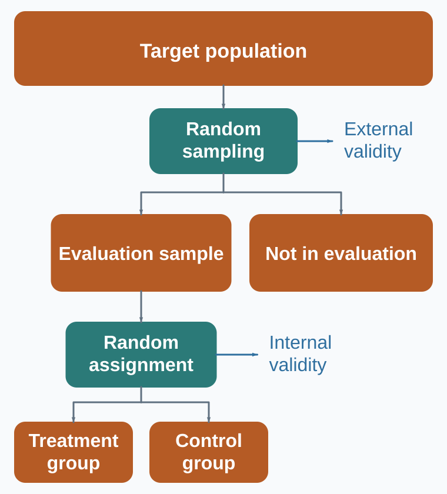
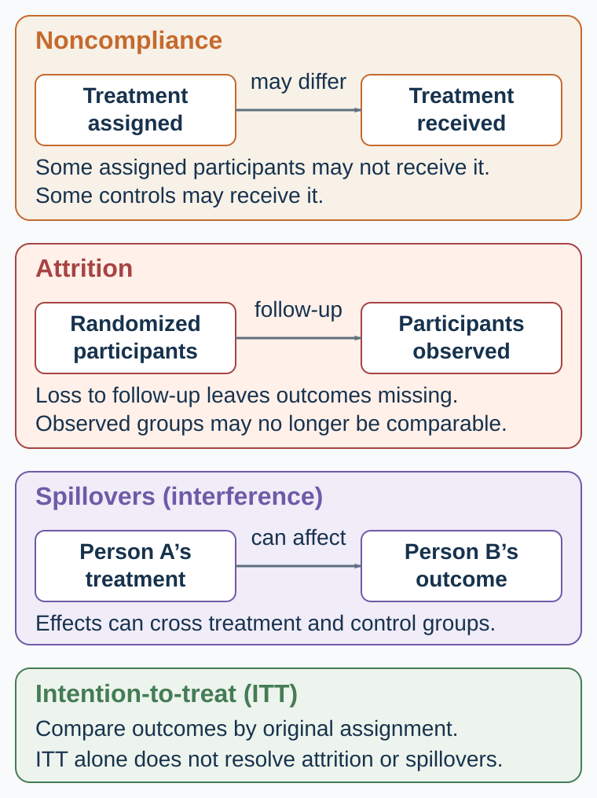

Appendix D — Running an Experimental Study: From Question to Credible Evidence
A practical workflow for designing, implementing, analyzing, and reporting behavioral experiments
A clinic introduces a shorter appointment reminder, and attendance rises. The staff would like to keep it and expand its use. Yet attendance might also have risen because the season changed or a different group of patients received appointments. Acting on the wrong explanation could direct time and money toward a reminder that made no difference. What comparison would let the clinic decide whether the change deserves credit?
Before planning that comparison, the clinic needs to establish what earlier reminder research has already answered. Appendix C explains how a literature review can identify the remaining uncertainty and show why a new study would matter.
This appendix follows an imagined study from that question to a report another researcher could examine. The final worked example uses generated data so you can reproduce its calculations. Read the appendix as a methods chapter or return to the relevant phase while planning your own study.
The experimental workflow
The five phases in Table D.1 turn the clinic’s question into a study whose decisions and results can be examined. Each leaves a record needed to interpret the next: the question determines the comparison, the design determines what must be recorded, and those records determine which conclusion the analysis can support.
| Phase | What you do | What you preserve |
|---|---|---|
| 1. Define | Turn the topic into a testable question; define the construct, outcome, comparison, population, and estimand | Research question, theory, hypotheses, construct definitions |
| 2. Design | Choose the experimental design; create treatments and measures; plan assignment, power, exclusions, and analysis | Protocol, materials, code, design calculation, preregistration, ethics approval |
| 3. Implement | Recruit, assign, deliver, measure, and monitor without steering the study toward a preferred result | Recruitment and assignment logs, timestamps, deviations, attrition, treatment fidelity |
| 4. Analyze | Freeze the data, execute the planned analysis, check robustness, and label exploration | Immutable raw data, cleaning scripts, analysis code, output log, deviation record |
| 5. Report and preserve | Report estimates and uncertainty, match the claim to the design, share what can be shared, and archive what must be protected | Manuscript, tables and figures, reproducibility package, access conditions, correction path |
The design card collects the decisions to make before data collection. In the sections below, return to the clinic whenever a technical distinction becomes difficult to follow: what would it change about the reminder comparison?
Start with the claim you want to earn
The reminder example allows four different questions:
- Description: By how much did attendance rise?
- Prediction: Which patients are likely to miss a future appointment?
- Causation: What would attendance have been without the new reminder?
- Mechanism: Did the reminder work by improving comprehension, attracting attention, or changing something else?
A before–after count could answer the descriptive question while leaving the others unresolved. To estimate the reminder’s effect, we need a credible comparison; to explain its mechanism, we need evidence that separates the possible pathways.

The sequence in Figure D.1 helps locate a weakness before it becomes a confident conclusion. If the attendance record is incomplete, for example, a sound assignment procedure alone will not rescue the final estimate.
Define the question
1. Turn a topic into a question and hypothesis
“Anchoring,” “happiness,” and “AI advice” are topics. They tell a research team where to look, but leave room for incompatible decisions about what to measure and which comparison matters. A research question specifies what would count as an answer, so that collecting the data can resolve the uncertainty that motivated the study.
For an empirical study, write:
For population P, what is the effect or association of intervention/exposure X, relative to comparison C, on outcome Y, over time T, and through which proposed mechanism M?
The title need not contain every element, but the design must specify enough to make the question and comparison interpretable.
A hypothesis should specify a prediction that could be contradicted. For the clinic, that might be: assignment to the shorter reminder increases recorded attendance within thirty days relative to assignment to the standard reminder. The outcome and comparison make the proposal testable.
Three distinctions prevent later confusion:
- Confirmatory analysis evaluates a claim and analysis plan specified without using the outcome pattern.
- Exploratory analysis uses the data to discover patterns and generate explanations.
- Post hoc prediction can be valuable, but it must not be narrated as if it was specified in advance.
- Can another researcher name the population, comparison, outcome, and horizon?
- Is the question descriptive, predictive, causal, mechanistic, or a synthesis question?
- What result would count against the hypothesis?
- Is the study feasible with the available sample, ethics, time, access, and measurement?
- Would the answer change theory, a decision, a design, or a boundary condition?
2. Define the construct before choosing the instrument
Suppose the clinic wants to explain whether the reminder improves understanding. Understanding is the construct, the property the study seeks to investigate. A question asking patients to identify the appointment time is one possible operationalization, a procedure for making that property observable. Other studies use scales, choices, response times, transfers, or physiological signals to investigate constructs such as trust, impatience, fairness, or experienced affect.
Similar labels can hide different constructs. A one-shot transfer, a self-report of generosity, and repeated helping behavior are not interchangeable measures of “prosociality.” Different labels can also hide near-identical measures. Name the construct first, then justify why the operation captures it in this population and setting.
Reliability concerns the consistency or precision of a measurement for its intended use. Validity concerns whether the interpretation of the score is warranted. A measure can be reliable and invalid: a scale can reproduce the same number while measuring the wrong object. High internal consistency does not establish construct validity.
Before data collection, record:
- exact items, task, instructions, response scale, timing, scoring, exclusions, and version;
- why the measure fits the construct and decision context;
- evidence about reliability and validity in a relevant population;
- whether the treatment changes the measure itself rather than the underlying construct;
- whether comparison across languages or groups assumes comparable scale use;
- which outcome is primary and which are secondary, manipulation checks, mediators, or exploratory.
Manipulation checks need care. A post-treatment check can be a useful diagnostic, but conditioning the main analysis on passing it can break randomization. If the treatment changes how people interpret the check, the check is also an outcome.
These measurement decisions determine what the data can tell us about the theory (Flake & Fried, 2020).
3. Separate description, prediction, causation, and mechanism
With the outcome defined, return to the question the study is meant to answer. Table D.2 connects each kind of claim to the comparison or check it requires, preventing an accurate prediction from being mistaken for evidence about an intervention.
| Claim family | Target question | Design requirement | Common overreach |
|---|---|---|---|
| Description | What happened, to whom, and how variable was it? | Defined population, measure, sampling, missingness | Generalizing beyond the observed population |
| Association | How do measured variables co-vary? | Transparent adjustment and measurement | Calling an adjusted coefficient an effect |
| Prediction | How well does a model forecast new observations? | Honest out-of-sample evaluation and distribution-shift checks | Treating predictive importance as a causal lever |
| Causal effect | What would change under an intervention? | Credible counterfactual and identification assumptions | Treating before–after change as treatment effect |
| Causal mechanism | Through which pathway did the effect arise? | Variation or evidence that separates pathways | Relabeling a mediator correlation as a process |
Prediction and causation can point in different directions. An excellent predictor may be impossible or unethical to intervene on. A weak predictor can still be a useful treatment if its manipulated change affects the outcome. “The model predicts who defaults” does not answer “What policy reduces default?”
Mechanism is harder still. Showing that treatment changes a proposed mediator and the mediator correlates with the outcome is not, by itself, a causal mechanism test. The mediator is post-treatment and can be confounded with unmeasured responses. Mechanism evidence becomes stronger when designs manipulate or otherwise identify the pathway, rule out alternatives, and predict boundary conditions.
Design the comparison
4. Make the counterfactual and confounding visible
An individual’s causal effect is the difference between what would happen to that person under treatment and what would happen under control in the same setting.
Only one potential outcome is observed. The missing one is the counterfactual problem. A comparison group is useful when its average outcome represents what would have happened to the treated group without treatment. It cannot reveal each treated person’s individual effect.
Last year’s attendance does not supply that counterfactual for this year’s patients: the weather, patient mix, and appointment system may all have changed. A concurrent randomized comparison exposes both reminder groups to the same period. If allocation and follow-up preserve that comparison, the difference in their average attendance can estimate the reminder’s effect without attributing the common seasonal change to it (Duflo et al., 2007).
Confounding occurs when the treatment comparison also reflects other causes of the outcome. If staff send the new reminder only to patients who are easier to contact, contactability may help explain an attendance difference. Statistical adjustment addresses that problem only under assumptions about the measured causes, the model, and what remains unmeasured.
Ask of every causal claim:
- Why is the comparison group a credible counterfactual?
- Which common causes of treatment and outcome are blocked by design?
- Which remain possible?
- Did treatment affect observation, attrition, reporting, or exposure to the outcome?
- Could one unit’s treatment change another unit’s outcome?
5. Choose the design that identifies the contrast
Table D.3 compares approaches by what generates the contrast and what assumptions support it. Start with that process: an experiment, a naturally occurring difference, and a simulated outcome provide different grounds for inference.
| Approach to evidence | What creates the comparison? | Strong use | Central assumption or limit |
|---|---|---|---|
| Randomized experiment | Known random assignment | Average effects of assignment in the study population | Implementation, attrition, interference, and sampling still matter |
| Natural or quasi-experiment | Rule, threshold, shock, timing, or instrument | Causal effects when the assignment process is credible | Each design has specific untestable assumptions |
| Other observational comparison | Naturally occurring differences | Description, prediction, hypothesis generation; sometimes causal analysis with strong assumptions | Unmeasured confounding and selection |
| Simulation | Outcomes generated by an explicit model | Logic, mechanisms, sensitivity, boundary results | A result about the model is not automatically evidence about people |
Laboratory and field settings are a separate design choice. A randomized laboratory experiment uses a controlled task to examine mechanisms or comparative statics, with conclusions bounded by the task, stakes, participants, and institution. A randomized field experiment tests effects in a natural setting, often with less control over treatment delivery and spillovers. Both are randomized experiments in the table above; the setting does not itself establish how treatment was assigned.
A regression discontinuity design needs continuity near the threshold and limited manipulation. Difference-in-differences needs a credible counterfactual trend and attention to timing and heterogeneous treatment effects. An instrumental-variable design needs instrument relevance plus independence, exclusion, and—for the usual LATE interpretation—monotonicity. A natural event is useful only if the process generating exposure supports the comparison.
No design dominates on every dimension. Control can improve internal validity and narrow realism. Field context can increase realism and add uncontrolled pathways. Build a body of evidence whose weaknesses do not all point in the same direction.
The clinic may have capacity to offer additional appointment support to only some eligible patients. A lottery within that eligible group can allocate scarce places and create a comparison. Fix eligibility before the draw; if only borderline cases enter the lottery, the causal conclusion concerns that group.
A randomized phase-in can compare patients or clinics receiving a program earlier with those scheduled to receive it later. Compare outcomes while their exposure differs, account for calendar time, and consider whether the announcement changes behavior before delivery. Once everyone has received the program, there is no contemporaneous untreated group for that same contrast.
When participation cannot be assigned, an encouragement design randomizes an invitation or incentive to participate. It directly identifies the effect of that encouragement. Inferring the effect of participation itself requires the additional assumptions in the noncompliance section below. Each approach uses an operational feature to create an informative comparison (Duflo et al., 2007).
A between-subjects design assigns different people to different conditions. A within-subjects design exposes the same person to multiple conditions, allowing comparisons that account for stable individual differences. The latter can improve precision, but exposure to the first condition may change responses to the next through learning, fatigue, contrast, or carryover. Randomizing or counterbalancing order helps diagnose some of these problems; it does not erase an irreversible treatment effect (Shadish et al., 2002).
For a reminder study, randomly rotating message versions across repeated appointments could support a within-person comparison only if earlier messages do not contaminate the later contrast in an unaddressed way. An intervention that permanently changes knowledge cannot simply be switched off for the next period. Choose the unit and sequence to identify the effect, rather than choosing repeated measurement simply because it produces more rows.
Suppose the clinic wants to change both the reminder’s content and its timing. Comparing a plain message sent a week ahead with a personalized message sent the day before would test a package; it could not tell us which change mattered.
A 2 × 2 factorial design crosses two content versions with two timing options, creating four conditions. Random assignment to all four combinations permits a comparison of content at each timing and timing under each content version. In a balanced design, the main effect of content averages its effect across the two timings. An interaction asks whether that effect differs between timings: personalization might help when a message arrives early but add little the day before (Collins et al., 2009).
Those are different questions. State which one matters before allocating the sample, and plan enough precision for the interaction if it is central. Merely including two factors does not make a study informative about how they work together.
6. Random sampling and random assignment solve different problems
The clinic wants to know both whether the reminder works and whose attendance it could improve. These questions concern different forms of validity. Internal validity asks whether the study supports its causal conclusion for the comparison it makes. External validity asks how far the finding applies to other people, settings, treatments, or times. We therefore need to distinguish how patients enter the study from how they receive a reminder (Shadish et al., 2002; Stuart et al., 2011).
Random sampling selects units from a defined population using known, nonzero selection probabilities. It supports inference from the sample to that population, one aspect of external validity. A random sample from the clinic’s patient list can therefore support a population estimate more directly than recruiting only patients who respond to an advertisement. The analysis still needs to respect the sampling design, including unequal selection probabilities, and account for incomplete coverage or selective nonresponse.
That support has a boundary. A patient list excludes people who never reached the clinic, and a sample from this clinic does not automatically represent another health system or a later period. Generalizing a treatment effect also requires a credible causal estimate in the first place and attention to factors that could change the effect across populations and settings.
Random assignment allocates study participants to treatment conditions by chance. It supports internal validity by separating treatment allocation from pre-existing causes of the outcome. The assigned groups are comparable in expectation, allowing their outcomes to estimate the effect of assignment when implementation and analysis preserve the comparison.
For example, the clinic could recruit volunteers and randomly assign them to the standard or shorter reminder. That design can support a causal conclusion about the volunteers even though their response may differ from other patients’. Conversely, drawing a random sample of patients and then letting staff choose which reminder each receives would leave the treatment comparison open to confounding. Random sampling and random assignment can be used together, but neither substitutes for the other (Stuart et al., 2011).

Follow the two forks in Figure D.2. The first determines who enters the evaluation; the second determines which condition those participants are assigned to. The control group is part of the evaluation sample and must be followed for outcomes. People outside the evaluation are not that control group. The figure shows one possible design: a trial can use random assignment without random sampling, as in the volunteer example above, while requiring a separate argument about generalization.
Balance groups at the right level
The unit of randomization is the entity whose treatment assignment is drawn. The clinic could assign individual patients, households, or whole clinics. The choice should reflect how the intervention is delivered and how people may affect one another. If family members share messages, household assignment may contain some spillovers; if a clinic changes its entire reminder system, assigning individual patients may be impractical.
The unit of randomization can differ from the unit of measurement. A study may assign clinics but record each patient’s attendance. Those patient records provide information, yet patients in the same clinic share an assignment and may share other influences. The analysis must account for that dependence, for example through inference at the level of the randomized clusters. A thousand patients across two randomized clinics do not provide a thousand independently randomized comparisons.
Choose the level that supports credible delivery and the intended effect, then plan the number of randomized units and the analysis together. Assigning larger groups can reduce contamination while leaving fewer independent groups and less precision; it does not guarantee that effects stop at the group boundary (Duflo et al., 2007).
Random assignment does not guarantee that realized groups are identical. With a common assignment probability, it makes assignment independent of baseline potential outcomes and covariates. Stratified designs provide the corresponding independence within strata; unequal assignment probabilities require the appropriate weighting or adjustment. Across repeated allocations under a balanced design, baseline differences average to zero; in one realized sample, chance imbalance can occur (Imbens & Rubin, 2015).
This changes how balance should be used.
- Verify the assignment code, unit, probabilities, strata, clusters, and allocation concealment.
- Report important baseline covariates by group and inspect standardized differences or design-relevant summaries.
- Do not run dozens of baseline significance tests and treat one p < .05 as proof that randomization failed. Under valid randomization, some chance differences are expected; p-values mainly restate that fact (Senn, 1994).
- Pre-specify adjustment for strong predictors to improve precision; do not select controls by whether their baseline test is significant.
- Investigate patterns that suggest coding errors, differential recruitment after assignment, or implementation failure.
Discarding an allocation after viewing an inconvenient imbalance can invalidate the stated assignment mechanism. But the rule “never rerandomize” is also wrong. Rerandomization can be valid when the acceptable-balance criterion, variables, and procedure are specified before treatment assignment and the analysis accounts for that restricted randomization (Morgan & Rubin, 2012).
Stratification, or blocking, forms groups using important baseline characteristics and randomizes within each one. For example, the reminder study could divide patients by clinic and prior attendance, then allocate both reminder versions within each stratum. This makes the comparison less dependent on a chance concentration of frequent attenders in one arm. Pair matching similarly assigns treatment within preformed pairs of comparable units. Specify these groups before assignment and preserve the allocation structure in the analysis (Bruhn & McKenzie, 2009).
7. Plan precision before collecting outcomes
The clinic could run a small pilot quickly, yet learn too little to choose between continuing and abandoning the reminder. A study needs enough precision to distinguish effects that would lead to different decisions. Power is the probability that a specified analysis will meet its decision criterion under a specified effect and data-generating process. It is not a property of sample size alone.
A defensible design calculation declares:
- primary outcome and estimator;
- smallest effect of substantive interest and plausible effect range;
- outcome variance, baseline correlation, and repeated-measure structure;
- assignment ratio, clusters, intraclass correlation, and strata;
- expected noncompliance, attrition, missingness, and multiple testing;
- significance or interval criterion and analysis model.
Do not take the largest published estimate from a small study, insert it into a calculator, and call the resulting sample adequate. Selective publication and sampling variation tend to make early significant effects too large.
In a cluster trial, adding patients to the same clinics and adding more randomized clinics are different design changes. When outcomes within a clinic are positively correlated, additional patients provide less new information than the same number of independent observations. A power calculation that ignores this structure can promise precision the study will not deliver (Duflo et al., 2007).
Low power causes more than missed significance. Conditional on passing a significance filter, estimates can have the wrong sign (Type S error) or a seriously exaggerated magnitude (Type M error). Design analysis should therefore examine plausible estimates and uncertainty, not only a binary rejection probability (Gelman & Carlin, 2014).
After data collection, observed power computed from the observed effect adds little. Report the estimate, compatible interval, design assumptions, and what effect sizes the study could or could not distinguish.
Run the study
8. Protect the assignment during implementation
Random assignment gives the clinic a basis for comparing reminder offers. Failed delivery can make the effect of assignment differ from the effect of receiving a message; missing attendance records can also compromise the comparison between assigned groups. Track each participant or unit from eligibility through assignment, delivery, outcome observation, and analysis to establish which effect the records can support.

The three panels in Figure D.3 distinguish problems that are easily collapsed into “dropout.” Noncompliance concerns treatment receipt, attrition concerns missing outcomes after loss to follow-up, and spillovers or interference concern effects on other people. They can occur together, but they change different parts of the comparison. The final panel states the starting point for analysis: retain original assignment when estimating the intention-to-treat effect, then address the assumptions threatened by missing outcomes and interference.
Attrition and missing outcomes
Attrition occurs when outcomes cannot be collected for people originally included in the study. It is dangerous when missingness differs by assignment or relates to potential outcomes. Equal attrition rates do not guarantee equal selection, and a low percentage is not automatically harmless.
Suppose the clinic measures patients’ understanding only when they attend. If the new reminder brings previously absent patients into the clinic, the observed groups may now contain different kinds of patients. A difference in understanding among attenders would mix the reminder’s influence with this change in who was measured. Follow-up should seek outcomes for all assigned patients, including nonattenders and people who never received the message.
Report rates and reasons by arm, timing, and baseline predictors of missingness. These checks can reveal selective loss; they cannot prove that the missing outcomes resemble the observed ones. Keep missing attendance records distinct from confirmed nonattendance. Weighting or imputation requires assumptions about missingness, while bounds and sensitivity analyses show what conclusions survive less favorable possibilities. Do not silently replace the randomized sample with complete cases and retain the original causal language (Duflo et al., 2007).
Noncompliance: effects of assignment and treatment receipt
With randomized assignment at a common probability, complete outcome observation, and a treatment contrast defined appropriately for interference, the intention-to-treat (ITT) effect is estimated by comparing average outcomes in the assigned groups.
ITT answers the effect of offering, assigning, or implementing the treatment under observed compliance. It preserves the randomized comparison and is often the policy-relevant estimand.
The effect among those who actually received treatment is not obtained by simply comparing receivers with nonreceivers; receipt is selected. With binary assignment and treatment receipt, consistently defined treatment versions, and no interference between units, assignment can identify a local average treatment effect (LATE) for compliers. The standard interpretation also requires:
- relevance: assignment changes treatment receipt;
- independence: assignment is as good as random relative to potential outcomes and compliance types;
- exclusion: assignment affects the outcome only through treatment receipt;
- monotonicity: assignment never makes a unit less likely to receive treatment.
Under these assumptions, divide the effect of assignment on the outcome by its effect on treatment receipt. This is the Wald ratio.
LATE concerns the compliers whose receipt changes with this instrument, rather than everyone offered treatment (Angrist et al., 1996). With a positive first stage no greater than one, the ratio has the same sign as ITT and at least its absolute magnitude.
Hypothetical calculation. Suppose a study randomizes invitations to a job-placement service. Participation is 45% among those invited and 20% among those not invited; employment is 43% and 40%, respectively, at the same follow-up. The effect of the invitation is 3 percentage points. Under the assumptions above, the effect of participation for compliers is 12 percentage points: divide the 3-point employment increase by the 25-point increase in participation, expressing both as proportions. These are two answers to different questions. If the invitation itself motivates job search without participation, the exclusion restriction fails and the division no longer has that treatment-effect interpretation.
Spillovers, interference, and displacement
The usual no-interference assumption says one unit’s outcome does not depend on other units’ assignments. Social information, contagion, peer effects, congestion, and markets often violate it.
Spillovers can make the standard difference too small, too large, or simply answer the wrong question. A job-placement program can help treated workers while displacing untreated workers from a fixed number of jobs. The direct effect and the total labor-market effect are different estimands.
To separate these effects, treatment saturation designs vary the proportion offered treatment within a group or market. Comparing offered and unoffered people within a market estimates a contrast at that exposure level. Comparing unoffered people in exposed markets with people in markets receiving no offers helps identify spillovers. Comparing average outcomes across markets addresses the wider effect of the policy at each tested saturation. Each comparison needs its own assignment, measurement, and analysis plan.
Crépon and colleagues (2013) used this approach to evaluate job-placement assistance across 235 French labor markets. They randomized the proportion of eligible young, educated job seekers offered assistance to 0%, 25%, 50%, 75%, or 100%, then randomized individual offers within the relevant markets. Gains in stable employment visible after eight months were transitory and appeared partly to come at other eligible workers’ expense. The study found little net benefit.
The markets receiving no offers were deliberately included and measured as pure controls. They are different from the people outside the evaluation in Figure D.2. Higher-level assignment, buffer areas, or network measurement may also help, but none should be treated as proof that interference has disappeared. State whose outcome depends on whose treatment and whether the study estimates an individual gain, an effect on others, or a broader policy effect.
Evaluation can change behavior
Imagine that clinic staff tell the comparison group it has received the “ordinary” reminder. Some patients may try harder to prove they need no special help; others may disengage because they feel neglected. The resulting difference would include a response to the study’s social meaning, beyond the intended message contrast.
Research reactivity is the broader problem of participation or measurement changing what is being measured. The following distinctions help identify possible pathways, rather than label every unexpected result after the fact (Shadish et al., 2002).
| Pathway | What might change? | A useful design check |
|---|---|---|
| Demand characteristics | Participants infer the hypothesis and cooperate with it, resist it, or manage their image. | Use neutral instructions and assess what participants believed the study was testing. |
| Hawthorne effect | Awareness of study participation or observation changes behavior. | Standardize contact and, where feasible, vary observation separately from treatment. |
| Compensatory rivalry, or John Henry effect | A comparison group exerts extra effort to compete with a favored treatment group. | Avoid status-laden group labels and record changes in effort or competing assistance. |
| Resentful demoralization | A comparison group reduces effort because its treatment seems inferior or unfair. | Check perceived fairness and distinguish disappointment from the intended contrast. |
| Anticipation | People change behavior before treatment because they expect it. | Define the announcement and exposure dates and inspect earlier outcomes. |
| Survey reactivity | Asking about a choice changes its salience or subsequent enactment. | Consider randomizing survey exposure or using consented administrative outcomes. |
Use Table D.4 to identify which pathways your design needs to address. A systematic review found highly varied evidence under the Hawthorne label, with substantial uncertainty about mechanisms and magnitudes (McCambridge et al., 2014). More specifically, Zwane and colleagues (2011) randomly varied survey exposure across five field studies: surveys increased use of health products in three studies, but the two microlending studies did not detect changes in borrowing. Measurement can matter without having one predictable effect everywhere.
Reduce avoidable salience, blind participants or staff where ethical and feasible, use unobtrusive or administrative measures with appropriate consent and privacy, standardize contact, and design diagnostics. Where possible, keep outcome assessors unaware of assignment and define scoring rules before outcomes are examined, so that expectations about the treatment do not influence measurement. Deception or undisclosed observation requires independent ethical justification; methodological convenience does not override respect for persons.
Analyze the planned comparison
9. Make multiplicity and flexibility visible
With many outcomes, subgroups, exclusions, transformations, models, and stopping rules, some apparently strong results will arise by chance. The problem is not only a researcher consciously “fishing.” Undocumented flexibility makes the effective analysis set unknowable.
Before outcomes are observed:
- designate primary and secondary outcomes;
- specify the estimator, treatment contrast, exclusions, covariates, missing-data rule, transformations, subgroup tests, and stopping rule;
- define a family for error-rate or false-discovery control where appropriate;
- preserve space for exploration and label it as exploration.
Preregistration time-stamps decisions. Deviations can be scientifically necessary. Report what changed, when, why, and whether the change used outcome information.
Report all planned outcomes, raw treatment-control summaries where meaningful, adjusted estimates, uncertainty, and the multiplicity approach. A null result is not evidence of exact zero; a significant result is not evidence of practical importance.
Report, reproduce, and extend
10. Replication is estimation under a declared protocol
A replication estimates an effect under a specified protocol, sample, setting, measure, and analysis, then examines how the new estimate changes cumulative uncertainty.
- Direct replication holds key procedures close to the original to test repeatability under a defined protocol.
- Conceptual replication tests a theory with a different operation; a difference can reflect the theory, the new measure, or an unrecognized moderator.
- Multi-site replication estimates average effects and heterogeneity across implementations, populations, and settings.
- Reanalysis or reproduction checks whether reported results follow from the declared data and code; it is not the same as collecting new data.
Large replication projects in psychology and experimental economics found both replicated effects and substantial attenuation or heterogeneity (Camerer et al., 2016; Open Science Collaboration, 2015). These projects show why estimates should be evaluated across studies.
For a useful replication, document fidelity and departures, compare effect estimates with intervals, analyze protocol heterogeneity, and update the cumulative claim. A statistically significant original and nonsignificant replication can still have compatible estimates. A binary verdict discards that information.
11. Build an open and reproducible workflow
Another researcher should be able to check how the clinic reached its conclusion. Making the records public, however, could expose patients’ identities or confidential information. The target is as open as possible and as protected as necessary.
A minimum project structure preserves:
- immutable raw inputs with provenance and checksums;
- a data dictionary, consent and access conditions, and de-identification decisions;
- versioned materials, assignment code, and implementation logs;
- scripted transformations from raw to analytic data;
- an environment or dependency record plus random seeds where relevant;
- a machine-readable analysis that regenerates tables and figures;
- a README with exact commands and expected outputs;
- a deviation log connecting preregistration, implementation, and final analysis;
- disclosure of inaccessible data, proprietary materials, or manual steps.
Run the pipeline in a clean environment before release. Check that figures and tables match the manuscript, the sample flow adds up, and the public package contains no direct or inferable identifiers. The FAIR principles—findable, accessible, interoperable, reusable—do not imply that every dataset is public; “accessible” can mean a governed access process (Wilkinson et al., 2016).
Preregistration, open materials, open code, and registered reports change different incentives. They should be evaluated and improved rather than treated as badges of truth (Munafò et al., 2017; Nosek et al., 2018).
12. Transport the result only as far as the evidence travels
Suppose the clinic establishes that its new reminder improves attendance. A neighboring clinic wants to adopt it, but serves patients with different needs and uses a different booking system. The original comparison cannot by itself tell that clinic what to expect. The sampling step in Figure D.2 supports inference to a defined population; extending the result to a different setting requires examining what else has changed.
“The laboratory is artificial” is not a complete criticism. Every design abstracts. A lab can identify a mechanism that is hidden in the field. A field experiment can be realistic and highly local. A representative sample can improve population description but not guarantee that an intervention effect transports across institutions.
Build a transport argument:
- Name the target population and setting.
- Compare the study and target on effect modifiers, treatment delivery, outcome measurement, incentives, and equilibrium conditions.
- Explain why the mechanism should remain or change.
- Test heterogeneity with enough precision and without converting exploratory subgroups into facts.
- Seek replications whose contexts vary on the proposed boundary condition.
External validity is not a yes/no property of a study. It is an argument supported by design, theory, and accumulated evidence.
13. Match the final sentence to the design
Table D.5 shows how wording can preserve or exceed what a design establishes. In particular, an effect of assignment should not become a claim about everyone who receives treatment, and a modeled pattern should not become proof of a human mechanism.
| Evidence obtained | Defensible sentence | Sentence to avoid |
|---|---|---|
| Cross-sectional association | “X and Y were associated in this sample.” | “X changed Y.” |
| Out-of-sample predictive accuracy | “The model predicted Y in the held-out sample under this data environment.” | “The important predictors are causal levers.” |
| Randomized ITT estimate | “Assignment to the offer changed Y by … in the study sample.” | “Receiving treatment has this effect for everyone.” |
| Valid IV estimate | “For compliers induced by this instrument, treatment changed Y under the stated assumptions.” | “This is the universal treatment effect.” |
| Laboratory treatment effect | “Under this task, institution, stakes, and sample, treatment changed behavior.” | “Humans always behave this way.” |
| Simulation result | “Under these model rules and parameters, the mechanism can produce the pattern.” | “The simulation proves the human mechanism.” |
| Mediator correlation | “The pattern is consistent with the proposed pathway.” | “The mediator caused the effect.” |
For the clinic, the first sentence should identify which reminder groups were compared, how attendance differed, and how uncertain the estimate is. The explanation of why the reminder helped must stay within what that comparison can establish.
The one-page evidence design card
Complete Table D.6 before collecting data. Reading across the fields should reveal whether the measure, comparison, analysis, and intended claim fit together; an unresolved entry identifies a design decision that still needs attention.
| Field | Complete before data |
|---|---|
| Question | Population; treatment/exposure; comparison; outcome; horizon; mechanism |
| Claim family | Description; association; prediction; causal effect; causal mechanism |
| Construct | Definition and competing interpretations |
| Measure | Exact operation; scoring; reliability; validity; primary/secondary status |
| Assignment/comparison | Randomization and measurement units; probabilities; strata/clusters; timing; counterfactual logic |
| Estimand | Effect of assignment (ITT), average treatment effect (ATE), complier effect (LATE), spillover, predictive loss, or another defined quantity |
| Threats | Confounding; attrition; noncompliance; interference; demand; measurement change |
| Precision | Plausible effect; minimum detectable effect; variance; dependence; attrition; multiplicity |
| Analysis | Estimator; covariates; exclusions; missingness; uncertainty; family corrections |
| Ethics | Respect; consent; beneficence; justice; privacy; data access; stopping rules |
| Reproducibility | Registration; materials; code; environment; provenance; access plan |
| Transport | Target setting; likely effect modifiers; planned boundary tests |
Worked study: from question to report
The imagined clinic began with an attendance increase that could have had several causes. We can now replace that before–after comparison with a planned assignment comparison and examine what its estimate would mean. This simulated teaching study connects the design record to generated outcomes and an estimate.
Question. Among patients already eligible for a routine appointment, what is the intention-to-treat effect of assignment to a shorter, plain-language reminder, relative to the standard reminder, on attending within thirty days?
Design specified for this teaching example. Randomly assign 1,200 eligible patients in equal numbers after eligibility is fixed. The primary outcome is an administrative indicator for attendance within thirty days. The primary estimator is the difference in mean attendance by assignment, with an unpooled standard error and 95% confidence interval. Analyze every assigned patient in the assigned arm; report missing administrative outcomes rather than excluding them silently. Secondary outcomes, subgroup comparisons, and mechanism measures are exploratory unless separately declared.
| Design-card field | Declared choice |
|---|---|
| Population | Patients eligible for the appointment under the clinic’s existing rule |
| Treatment and comparison | Plain-language reminder versus standard reminder |
| Unit and assignment | Individual patient; exactly 600 assignments per arm |
| Primary outcome | Attendance recorded within thirty days |
| Estimand | ITT risk difference: assignment to new reminder minus assignment to standard reminder |
| Main threats | Delivery failure, wrong contact information, spillovers within households, missing administrative records, and outcome-definition errors |
| Mechanism boundary | The contrast tests the reminder package; it does not separately identify comprehension, fear reduction, salience, or lower friction |
| Decision rule | Report estimate and interval; the clinic evaluates operational cost, distribution across patient groups, and implementation errors before scaling |
Table D.7 fixes the reminder comparison, attendance outcome, and analysis before the result is known. The data below are generated with a declared seed and fixed probabilities solely to make that workflow reproducible:
The generated data contain 380 attendances among 600 control assignments and 417 among 600 treatment assignments. Attendance was therefore 63.3% under the standard reminder and 69.5% under the plain-language reminder. The estimated ITT difference is 6.2 percentage points, with an approximate 95% confidence interval from 0.8 to 11.5 percentage points.
Design-matched interpretation. The estimate concerns assignment to the reminder package in the simulated study population.
Implementing the study in a clinic. Preserve records of eligibility, assignment, message delivery, outcome collection, and every protocol deviation, alongside the analysis code and access conditions. Use them to check recruitment, delivery, missing outcomes, and spillovers.
Ethics is part of identification
The Belmont principles remain a useful starting point: respect for persons, beneficence, and justice. Respect requires meaningful information and voluntary participation where consent applies. Beneficence requires risks to be minimized and justified by potential value. Justice asks who bears research burdens and who can benefit.
Ethics also affects evidence. Coercive recruitment selects participants. Privacy fears change answers. An intervention that cannot be implemented ethically may have little policy relevance. Excluding affected groups for convenience can make the sample uninformative about those who bear the decision.
Institutional review, data-protection law, registration, and local procedures change over time. Check current requirements with the relevant institution before collecting data.
Key ideas
- A useful experimental question names the comparison, outcome, population, and period.
- Sampling determines who enters the evaluation; random assignment forms the treatment and control groups within it.
- Random assignment supports a comparison only when implementation and analysis preserve its meaning.
- The final claim should be traceable to the design, records, and reported uncertainty.
Study and practice
- Design a comparison for the clinic that would separate the reminder package’s effect from a seasonal change.
- Trace a patient through Figure D.2. Explain how being outside the evaluation differs from assignment to its control group, and when household assignment might be preferable.
- Explain what you would record if some messages were not delivered or some attendance outcomes were missing. Identify which problem changes receipt and which changes observation.
- Propose a further comparison that could distinguish comprehension from attention as a mechanism, or an individual benefit from a spillover onto others.
References cited in this appendix
Angrist, J. D., Imbens, G. W., & Rubin, D. B. (1996). Identification of causal effects using instrumental variables. Journal of the American Statistical Association, 91(434), 444–455.
Athey, S., & Imbens, G. (2016). Recursive partitioning for heterogeneous causal effects. Proceedings of the National Academy of Sciences, 113(27), 7353–7360. https://doi.org/10.1073/pnas.1510489113
Bruhn, M., & McKenzie, D. (2009). In pursuit of balance: Randomization in practice in development field experiments. American Economic Journal: Applied Economics, 1(4), 200–232.
Camerer, C. F., Dreber, A., Forsell, E., Ho, T.-H., Huber, J., Johannesson, M., Kirchler, M., Almenberg, J., Altmejd, A., Chan, T., Heikensten, E., Holzmeister, F., Imai, T., Isaksson, S., Nave, G., Pfeiffer, T., Razen, M., & Wu, H. (2016). Evaluating replicability of laboratory experiments in economics. Science, 351(6280), 1433–1436.
Collins, L. M., Dziak, J. J., & Li, R. (2009). Design of experiments with multiple independent variables: A resource management perspective on complete and reduced factorial designs. Psychological Methods, 14(3), 202–224. https://doi.org/10.1037/a0015826
Crépon, B., Duflo, E., Gurgand, M., Rathelot, R., & Zamora, P. (2013). Do labor market policies have displacement effects? Evidence from a clustered randomized experiment. Quarterly Journal of Economics, 128(2), 531–580. https://doi.org/10.1093/qje/qjt001
Duflo, E., Glennerster, R., & Kremer, M. (2007). Using randomization in development economics research: A toolkit. In T. P. Schultz & J. Strauss (Eds.), Handbook of Development Economics (Vol. 4, pp. 3895–3962). Elsevier. https://doi.org/10.1016/S1573-4471(07)04061-2
Flake, J. K., & Fried, E. I. (2020). Measurement schmeasurement: Questionable measurement practices and how to avoid them. Advances in Methods and Practices in Psychological Science, 3(4), 456–465.
Gelman, A., & Carlin, J. (2014). Beyond power calculations: Assessing Type S (sign) and Type M (magnitude) errors. Perspectives on Psychological Science, 9(6), 641–651.
Imbens, G. W., & Rubin, D. B. (2015). Causal inference for statistics, social, and biomedical sciences: An introduction. Cambridge University Press.
McCambridge, J., Witton, J., & Elbourne, D. R. (2014). Systematic review of the Hawthorne effect: New concepts are needed to study research participation effects. Journal of Clinical Epidemiology, 67(3), 267–277. https://doi.org/10.1016/j.jclinepi.2013.08.015
Morgan, K. L., & Rubin, D. B. (2012). Rerandomization to improve covariate balance in experiments. Annals of Statistics, 40(2), 1263–1282.
Munafò, M. R., Nosek, B. A., Bishop, D. V. M., Button, K. S., Chambers, C. D., Percie du Sert, N., Simonsohn, U., Wagenmakers, E.-J., Ware, J. J., & Ioannidis, J. P. A. (2017). A manifesto for reproducible science. Nature Human Behaviour, 1, 0021.
Nosek, B. A., Ebersole, C. R., DeHaven, A. C., & Mellor, D. T. (2018). The preregistration revolution. Proceedings of the National Academy of Sciences, 115(11), 2600–2606.
Open Science Collaboration. (2015). Estimating the reproducibility of psychological science. Science, 349(6251), aac4716.
Senn, S. (1994). Testing for baseline balance in clinical trials. Statistics in Medicine, 13(17), 1715–1726.
Shadish, W. R., Cook, T. D., & Campbell, D. T. (2002). Experimental and quasi-experimental designs for generalized causal inference. Houghton Mifflin.
Stuart, E. A., Cole, S. R., Bradshaw, C. P., & Leaf, P. J. (2011). The use of propensity scores to assess the generalizability of results from randomized trials. Journal of the Royal Statistical Society: Series A (Statistics in Society), 174(2), 369–386. https://doi.org/10.1111/j.1467-985X.2010.00673.x
Wilkinson, M. D., Dumontier, M., Aalbersberg, I. J. J., Appleton, G., Axton, M., Baak, A., Blomberg, N., Boiten, J.-W., da Silva Santos, L. B., Bourne, P. E., Bouwman, J., Brookes, A. J., Clark, T., Crosas, M., Dillo, I., Dumon, O., Edmunds, S., Evelo, C. T., Finkers, R., … Mons, B. (2016). The FAIR Guiding Principles for scientific data management and stewardship. Scientific Data, 3, 160018.
Zwane, A. P., Zinman, J., Van Dusen, E., Parienté, W., Null, C., Miguel, E., Kremer, M., Karlan, D. S., Hornbeck, R., Giné, X., Duflo, E., Devoto, F., Crépon, B., & Banerjee, A. (2011). Being surveyed can change later behavior and related parameter estimates. Proceedings of the National Academy of Sciences, 108(5), 1821–1826. https://doi.org/10.1073/pnas.1000776108